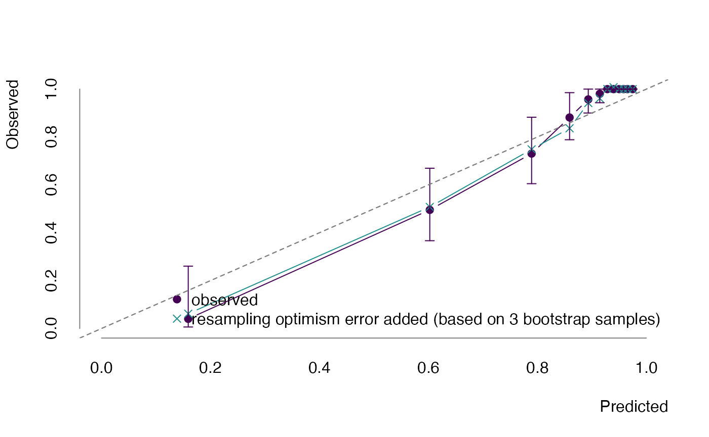
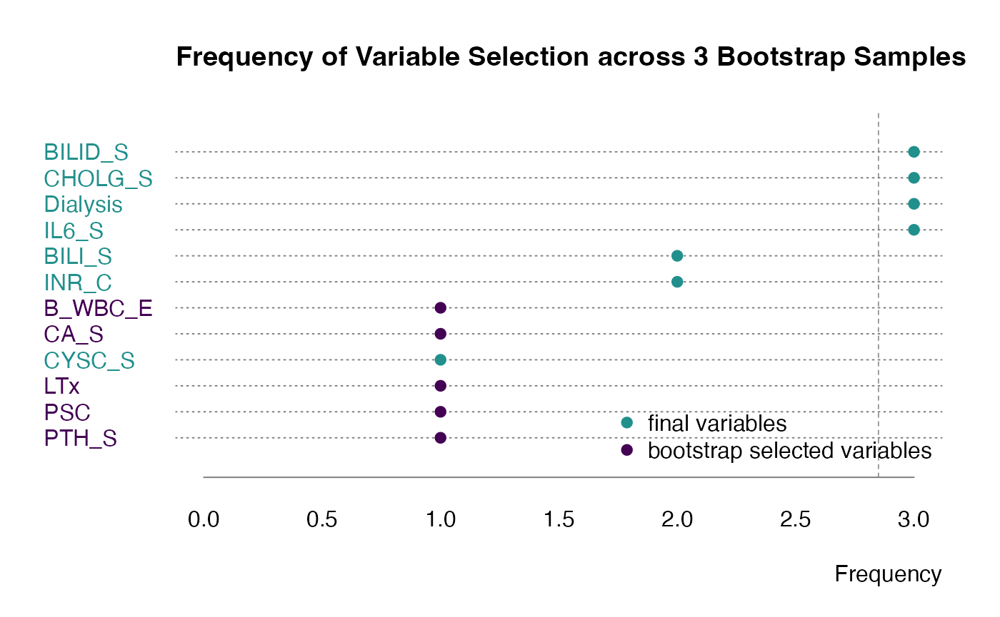

Authors: Sebastian Gibb [aut, cre] (https://orcid.org/0000-0001-7406-4443)
Last modified: 2022-06-15 19:58:35
Compiled: Wed Jun 15 20:04:00 2022
The ameld R package extends glmnet::cv.glmnet (Friedman et al. 2022; Friedman, Hastie, and Tibshirani 2010). It supports a repeated cross-validation (rcv.glmnet) and a repeated cross-validation to tune alpha and lambda simultaneously (arcv.glmnet). Additionally it provides a bootstrap function that could utilize both functions and supports survival data as described in Harrell, Lee, and Mark (1996).
We use the eldd dataset provided by ameld (see ?eldd for details) and standardize it using the zlog (Hoffmann et al. 2017) method.
library("ameld")
library("zlog")
data(eldd)
data(eldr)
# transform reference data.frame for zlog
r <- eldr[c("Code", "AgeDays", "Sex", "LowerLimit", "UpperLimit")]
names(r) <- c("param", "age", "sex", "lower", "upper")
r$age <- r$age / 365.25
r <- set_missing_limits(r)
## we just want to standardize laboratory values
cn <- colnames(eldd)
cnlabs <- cn[grepl("_[SCEFQ1]$", cn)]
zeldd <- eldd
zeldd[c("Age", "Sex", cnlabs)] <- zlog_df(eldd[, c("Age", "Sex", cnlabs)], r)
zeldd[c("Age", "Sex", cnlabs)] <- impute_df(zeldd[c("Age", "Sex", cnlabs)], r)
zeldd <- na.omit(zeldd)Next we apply the bootstrapping. In general the number of bootstrap samples nboot should be equal or larger than 100. We use a much smaller number here to keep the runtime low.
##
## Attaching package: 'future'## The following object is masked from 'package:survival':
##
## cluster
srv <- Surv(zeldd$DaysAtRisk, zeldd$Deceased)
zeldd$DaysAtRisk <- zeldd$Deceased <- NULL
x <- data.matrix(zeldd)
bt <- bootstrap(
x, srv,
fun = rcv.glmnet,
family = "cox",
nboot = 3,
nfolds = 3,
nrep = 2
)## Loading required package: foreachWe could show an optimism corrected calibration curve.
plot(bt, what = "calibration")
Additionally we could see which variables are selected in each bootstrap step.
plot(bt, what = "selected")
It is possible to use arcv.glmnet to automatically select the best alpha in each bootstrap step.
selarcv <- function(...) {
dots <- list(...)
a <- arcv.glmnet(...)
i <- which.min.error(a, s = dots$s, maxnnzero = dots$maxnnzero)
a$models[[i]]
}
bt <- bootstrap(
x, srv,
fun = selarcv,
family = "cox",
alpha = seq(0, 1, len = 11)^3,
s = "lambda.1se",
maxnnzero = 9,
nboot = 10L, nfolds = 3, nrep = 5,
m = 50, times = 90
)This work is part of the AMPEL (Analysis and Reporting System for the Improvement of Patient Safety through Real-Time Integration of Laboratory Findings) project.
This measure is co-funded with tax revenues based on the budget adopted by the members of the Saxon State Parliament.
## R version 4.2.0 (2022-04-22)
## Platform: x86_64-apple-darwin17.0 (64-bit)
## Running under: macOS Big Sur/Monterey 10.16
##
## Matrix products: default
## BLAS: /Library/Frameworks/R.framework/Versions/4.2/Resources/lib/libRblas.0.dylib
## LAPACK: /Library/Frameworks/R.framework/Versions/4.2/Resources/lib/libRlapack.dylib
##
## locale:
## [1] en_US.UTF-8/en_US.UTF-8/en_US.UTF-8/C/en_US.UTF-8/en_US.UTF-8
##
## attached base packages:
## [1] stats graphics grDevices utils datasets methods base
##
## other attached packages:
## [1] doFuture_0.12.2 foreach_1.5.2 future_1.26.1 zlog_1.0.1.9000
## [5] ameld_0.0.24 survival_3.3-1 glmnet_4.1-4 Matrix_1.4-1
##
## loaded via a namespace (and not attached):
## [1] Rcpp_1.0.8.3 highr_0.9 progressr_0.10.1 bslib_0.3.1
## [5] compiler_4.2.0 jquerylib_0.1.4 iterators_1.0.14 tools_4.2.0
## [9] digest_0.6.29 viridisLite_0.4.0 jsonlite_1.8.0 evaluate_0.15
## [13] memoise_2.0.1 lattice_0.20-45 rlang_1.0.2 cli_3.3.0
## [17] parallel_4.2.0 yaml_2.3.5 pkgdown_2.0.4 xfun_0.31
## [21] fastmap_1.1.0 stringr_1.4.0 knitr_1.39 globals_0.15.0
## [25] desc_1.4.1 fs_1.5.2 sass_0.4.1 systemfonts_1.0.4
## [29] rprojroot_2.0.3 grid_4.2.0 listenv_0.8.0 R6_2.5.1
## [33] textshaping_0.3.6 future.apply_1.9.0 parallelly_1.32.0 rmarkdown_2.14
## [37] purrr_0.3.4 magrittr_2.0.3 codetools_0.2-18 htmltools_0.5.2
## [41] splines_4.2.0 shape_1.4.6 ragg_1.2.2 stringi_1.7.6
## [45] cachem_1.0.6Friedman, Jerome, Trevor Hastie, and Robert Tibshirani. 2010. “Regularization Paths for Generalized Linear Models via Coordinate Descent.” Journal of Statistical Software 33 (1): 1–22. https://doi.org/10.18637/jss.v033.i01.
Friedman, Jerome, Trevor Hastie, Rob Tibshirani, Balasubramanian Narasimhan, Kenneth Tay, Noah Simon, and James Yang. 2022. Glmnet: Lasso and Elastic-Net Regularized Generalized Linear Models. https://CRAN.R-project.org/package=glmnet.
Harrell, Frank E., Kerry L. Lee, and Daniel B. Mark. 1996. “MULTIVARIABLE Prognostic Models: ISSUES in Developing Models, Evaluating Assumptions and Adequacy, and Measuring and Reducing Errors.” Statistics in Medicine 15 (4): 361–87. https://doi.org/10.1002/(sici)1097-0258(19960229)15:4<361::aid-sim168>3.0.co;2-4.
Hoffmann, Georg, Frank Klawonn, Ralf Lichtinghagen, and Matthias Orth. 2017. “The Zlog-Value as Basis for the Standardization of Laboratory Results.” LaboratoriumsMedizin 41 (1): 23–32. https://doi.org/10.1515/labmed-2016-0087.